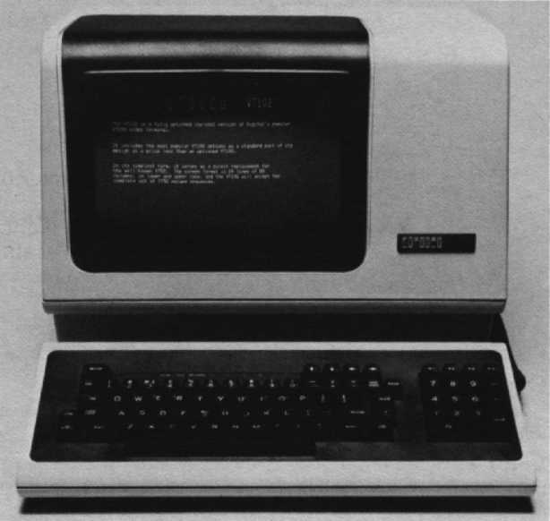
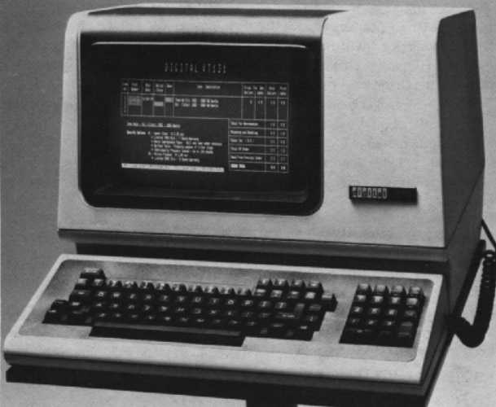

| Chapter 5 | Contents | Chapter 7 |
Chapter 6
The success of the VT100 video terminal led to the development of three additional terminals that offer full VT100 functionality plus additional features.
Digital's VT101 terminal is designed for the price sensitive customer. If you want all the capabilities of the VT100 but do not require expandability for your application, then the VT101 may be the terminal for you. The VT101's basic functionality is the same as that of the VT100 without options. The VT101 video terminal is totally self-contained, with no functional upgrade options.
The general purpose VT101 terminal can be used in a variety of applications – commercial, educational, and industrial, as well as for small businesses. It includes selectable local echo that allows the VT101 terminal to be used connected to non-Digital computer systems. It does not accept any options except for the 20 mA adapter, which allows for connection of the terminal in remote applications.
The following models of the VT101 video terminal are available.
|  |
Digital's VT102 terminal gives you enhanced VT100 functionality. Like the VT101, the VT102 is a low-cost product and incorporates the most popular VT100 options – the advanced video option and the serial printer port – in its base design. The advanced video option provide three capabilities.
The serial RS-232 printer port enables you to connect a printing terminal so you can generate a hardcopy printout of your screen's contents.
The VT102 supports the ability to insert or delete characters and lines of characters at the cursor position. The VT102 also supports insert and replace modes for adding characters. Insert mode displays the newly-added characters and moves previously displayed characters to the right. Replace mode adds characters by replacing the character currently at the cursor position.
A nonexpandable, general-purpose video terminal that can be used in commercial, educational, and industrial applications, the VT102 has built into it special communication-oriented features. These include modem support and true half-duplex communication protocols, as well as selectable local echo.
With the VT102 terminal, you can even select a model with a word processing keyboard.
|  |
The VT131 gives you the most popular VT100 options built into the terminal – advanced video and printer port. In addition, the VT131 has the advantage of two modes of transmission, conversational or block mode. The block mode environment lets you locally edit data before transmitting it to the host.
Designed for a variety of data entry applications, the nonupgradeable, block mode VT131 video terminal provides:
The local edit capability of the VT131 terminal allows you to enter and locally edit a full screen of data before transmitting the data as a block to the host. Local editing also reduces the amount of time the CPU spends processing data entry, since many editing features are built into the terminal, and need not be in your application program. The editing functions of the VT131 terminal include insert/delete character or line, active cursor controls, and forward/back tab. With block mode transmission, the host does not receive data on a character-by-character basis with each character requiring editing. This block mode feature allows the VT131 to be used on non-Digital systems where block mode transmission is required.
Protected fields prevent certain areas of the screen from being modified by data entry from the keyboard. This is valuable for forms applications. Data compression allows for selectable transmission of all or just unprotected data. This reduces the amount of data transmitted in a forms application.
Digital currently supports the VT131's block mode transmission under VAX/VMS version 3.0 only. Support is at the operating system level, and this requires the use of third-party applications programs to take full advantage of the VT131's features. This allows Digital software OEMs that use block mode terminals to use their software on Digital hardware with minimal modification. Digital has no plans to provide application software for the VT131 in other than VT102 (conversational) mode.
Other than VMS, Digital operating systems are optimized for conversational entry, and thus require careful use or modification in order to efficiently handle a number of VT131s. Modification may include expanding the buffer size of the terminal handler, changing the interrupt routines, etc. The exact modifications are application and system dependent and should only be attempted by those customers who possess operating system expertise. Modification of the operating system is not supported by Digital.
Digital offers the following models of the VT131.
| Part Number | Description |
|---|---|
| VT1XX-CA | VT101/VT102/VT131 20 mA current loop option with cable. |
The following VT101, VT102, and VT131 accessories and supplies are available. Check with your sales representative of Digital's Installed Base Group for the latest information.
| Part Number | Description |
|---|---|
| 4A-VT101-00 | VT101 spares kit |
| 4A-VT102-00 | VT102 spares kit |
| 4A-VT131-00 | VT131 spares kit |
The VT101, VT102, and VT131 terminals have the same monitor, keyboard, and audible and visual controls as the other members of the VT100 family. See Chapter 5 or the VT101, VT102, or VT131 User Guides for more information.
However, some indicator LEDs have been assigned for specific applications in the VT102 and VT131 terminals.
This is found in the VT102 and VT131 terminals. It shows the on and off position of the Clear to Send or Secondary Clear to Send modem connector signals. The internal communication switches of the terminal determine the connector signal used to turn on and off the CTS indicator. The on condition means that characters can be transmitted by the terminal.
This is found in the VT102 and VT131 terminals. It shows the condition of the Data Set Ready modem connector signal. The on and off condition of the Data Set Ready signal turns the indicator on and off. The on condition means that the Data Set is ready to transmit and receive characters. Note: When the 20 mA current loop option is installed, the DSR signal is not used.
This is found in the VT102 and VT131 terminals. It shows when the terminal is in insert or replace mode. When the terminal is in insert mode, the INSERT indicator is on. The terminal inserts characters at the cursor position, moving all previously displayed characters to the right. Characters moved past the right margin are lost. When the terminal is in replace mode, characters are added by writing over previously displayed characters at the cursor position.
This is found on the VT131 terminal and shows when the terminal is in edit or interactive mode. When the terminal is in edit mode, the indicator is on. Characters typed on the keyboard are displayed on the screen. The characters on the screen are edited before they are transmitted to the host. When the terminal is in interactive mode, the indicator is off. The terminal immediately transmits each character when typed.
All VT100 family members incorporate features that can be selected in set-up. Set-up features determine how the terminal operates. They allow the terminal to be configured according to your preference, and provide compatibility to the host and AC power source. Unlike some terminals, the VT100 family does not use switches or jumpers to individually turn the built-in features on or off. Instead, they use a nonvolatile memory (NVR) that always remembers what features have been selected, just as if a switch had been set.
Set-Up mode provides two, or in the case of the VT131, three brief descriptions of the current feature status. Set-Up A displays the location of the tab stops set in the terminal and a visual ruler which numbers each character position on the line. The status of other terminal features is summarized in Set-Up B.
See Chapter 5 for details on entering Set-Up A.
As described in Chapter 5, Set-Up B mode only can be entered from Set-Up A Mode. Because the VT101, VT102, and VT131 terminals have features different from a regular VT100 terminal, Set-Up B has additional features for you to select.
In addition to all the Set-Up B features described in Chapter 5 for the VT100 family, the VT101, VT102, and VT131 have some additional set-up choices.
This feature exchanges the position of the linefeed and the backslash key. Note: Only on VT102 and VT131.
Most computers echo back characters as they are received, but some do not. If the host does not echo characters, the local echo feature can be selected so that the terminal prints each character as it is typed. If the host computer does echo each character, the local echo feature can be disabled. Note: Only on VT101, VT102, and VT131.
The print termination character feature determines if a form feed (FF) control character is transmitted to the printer after a print screen operation. When the print termination character is selected as a form feed, a form feed character is transmitted to the printer after the screen is printed. Note: Only on VT102 and VT131.
This feature determines which characters on the screen are printed during a screen operation. When this feature is set for full screen, all characters on the screen are printed. When the feature is set for scrolling region, only the characters located in the scrolling region are printed. Note: Only on VT102 and VT131.
Selects the use of one or two bits by the modem interface. This feature does not determine the number of stop bits used by the printer interface. Note: Only on VT102 and VT131.
This lets the terminal automatically transmit the answerback message when a connection is made to the computer. When using half-duplex communication with the initial direction feature selected to receive, the answerback message is not transmitted until the terminal is able to transmit, once it is no longer receiving data. This feature does not affect the transmission of the answerback message. Note: Only on VT102 and VT131.
The disconnect delay feature is only used when the modem control set-up feature is set to full-duplex with modem control. It determines the time allowed before the terminal disconnects from the communication line when the receive line signal detection is list. Note: Only on VT102 and VT131.
The disconnect character enable feature determines if the terminal disconnects from the communications line when the disconnect character is received. When this feature is on, the terminal disconnects when the disconnect character is received. Also, the terminal automatically transmits the disconnect character when the SHIFT and BREAK key sequence is used. The disconnect character is usually the end of transmission (EOT) control character. Note: Only on VT102 and VT131.
The break enable feature determines if a break signal is transmitted when the BREAK key is pressed. If this feature is on, pressing the BREAK key causes the break signal to be transmitted. If the feature is off, the BREAK key does not function when pressed alone. However, all other sequences that use the BREAK key are not affected. Note: Only on VT102 and VT131.
This is only used when the modem control set-up is selected at half-duplex. This feature checks to determine if the terminal begins half-duplex communication by receiving or transmitting characters. Note: Only on VT102 and VT131.
This is only used when the modem control set-up is selected at half-duplex coded control. Auto turnaround causes the turnaround character to be transmitted automatically. This character is automatically transmitted after the characters transmitted by the RETURN key and the end of the answerback message. Note: Only on VT102 and VT131.
Both the VT102 and the VT131 feature modem control. Modem control signals are used to ensure that a connection exists between the terminal and computer before and during communication. If the connection does not exist, communication is not permitted. This selection is used when communicating with a computer through a full-duplex modem that uses modem control signals. These two terminals also offer asymmetric full-duplex that is full-duplex communication using a half-duplex modem with a secondary channel. The secondary channel of the half-duplex modem provides full-duplex communication by allowing the terminal to transmit characters on the secondary channel. Note: Only on VT102 and VT131.
The printer data/parity bits feature defines two separate but related communications features – data bits per character and parity – when communicating with the printer. Data bits per character defines the number of data bits of the transmit and receive characters, seven or eight bits. When eight bits is selected, however, the eighth bit is set to space or zero for characters transmitted. The eighth bit of received characters is ignored.
Parity defines the type of parity bit the terminal generates when transmitting characters, and checks when receiving characters. If no parity is selected, the parity bit is not included in the transmitted character and is ignored in received characters. Note: Only on VT102 and VT131.
Default settings can be recalled by pressing SHIFT and D while in set-up mode. This feature is available on the VT101, VT102, and VT131 terminals.
Escape and control sequences create functions not provided by standard control characters of the character set. These sequences are multiple character control functions that are not displayed but determine terminal operation. Escape and control sequences are defined by ANSI X3.41-1977 and X3.64-1979. Refer to Appendix C for more information about sequences and sequence formats or consult the User Guide for your terminal model.
The VT101, VT102, and VT131 terminals are designed to be easy to maintain. No preventative maintenance is required. They have built-in, self-test diagnostics that greatly reduce the time necessary to isolate and repair faults. These terminals also feature automatic self-tests that are run every time they are powered up. The use of pop fasteners instead of screw fasteners reduces the time and cost of repairs by providing easy access to all components. Should a repair become necessary, Digital Field Service is available worldwide.
The VT100 family has proven to be an exceptionally reliable series of terminals. There are just two mechanical switches – one for turning the terminal on, and one for selecting the power supply voltage. All other functions, such as baud rates, tabs, parity, etc., are set via the keyboard and stored in the nonvolatile memory. The elimination of mechanical switches aids the use of diagnostics for testing the terminal functions and adapting to varying environments under host control.
Automatic self-test modes are built into the VT101, VT102, and VT131 terminals.
The VT101 uses two self-tests to verify proper operation: a power-up self-test and a data loopback self-test. The power-up self-test is performed each time the terminal is powered up. The data loopback self-test is performed after the power-up test is successfully completed. To run the data loopback self-test, the terminal must be disconnected from the communication line and an external loopback connector must be installed. See your VT101 User Guide for further details.
In addition to the same power-up and data loopback self-tests performed by the VT101 terminal, the VT102 terminal runs an EIA loopback self-test and a printer loopback self-test.
The EIA loopback self-test verifies that the VT102 terminal can operate its modem control lines. The printer loopback self-test checks that the VT102 terminal printer interface can transmit and receive characters. In the printer loopback test, the transmit and receive lines are connected to each other with an external loopback connector. The terminal transmits characters on the transmit line and receives the characters on the receive line. Details on test procedures are in the VT102 User Guide.
The VT131 terminal performs the same self-tests – power-up, data loopback, EIA loopback, and printer loopback – as the VT101 and VT102 terminals. It also runs a printer self-test and verifies that the terminal and the printer can communicate. This test generates sample data for printing and transmits this data to the printer. Check your VT131 User Guide for details.
If it appears that there is a problem in the terminal, initiate the power-up self-test program. This test will help to determine if the problem lies in your terminal or in some other part of the computer system.
Two characters appear on the screen for each one character typed.
KBD LOCKED indicator is on.
KBD LOCKED indicator is on.
Printer does not print characters.
The following documents contain more detailed information about the VT100 family of terminals.
Also of interest are:
If you require information not contained in these documents, contact your local Digital representative, dealer, or distributor.
For specifications on characteristics common to all VT100 family members, see Chapter 5.